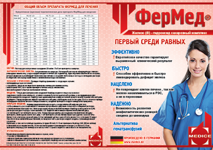
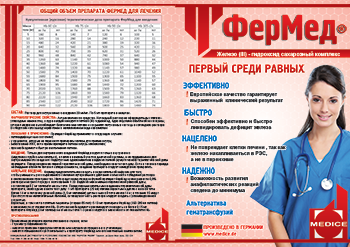

По данным ВОЗ, 40% землян страдают железодефицитной анемией. Обычно к анемии относятся примерно как к насморку: пройдёт, даже если не будешь лечить. Конечно, профилактика болезни лучше лечения. Но если вам всё же диагностировали анемию, нужно приниматься за лечение немедленно. Справиться с недугом поможет препарат ФерМед, произведённый в Германии.
ФерМед способен эффективно и быстро ликвидировать дефицит железа в организме, не повреждая клетки печени.
Препарат ФерМед стоит принимать только после назначения врача!
Товары сертифицированы и доступны в аптеках по всей территории РУз! Отпускаются только по рецепту врача.
ФерМед
железа гидроксид сахарозный комплекс


Лекарственная форма: раствор для внутривенного введения
Состав: 1 мл препарата содержит:
Действующее вещество: железа(Ш) гидроксид сахарозный комплекс (в пересчете на железо (III) 20 мг);
Вспомогательные вещества: натрия гидроксид до рН 10,5-11,3; вода для инъекций до 1 мл.
Описание: раствор темно-коричневого цвета, без осадка, сладковатый на вкус.
Фармакотерапевтическая группа: железа препарат.
Код АТС: В03АС02
Фармакологические свойства
Фармакодинамика
Препарат железа, регулирует метаболические процессы. Представляет собой коллоидный раствор, который состоит из сфероидальных железо-углеводных наночастиц. В ядре (центре) каждой частицы находится железа (III) гидроксид. Ядро окружено оболочкой из сахарозы, которая стабилизирует железа (III) гидроксид, медленно высвобождает биактивное железо и сохраняет полученные частицы в коллоидном растворе. В результате образуется комплекс, молекулярная масса которого составляет приблизительно 43 кД, вследствие чего его выведение через почки в неизменном виде невозможно. Железо (III) в этом комплексе связано со структурами, сходными с естественным ферритином.
Активное вещество препарата — железа (III) гидроксид сахарозный комплекс при попадании в организм диссоциирует в ретикулоэндотелиальной системе на железо и сахарозу. Благодаря более низкой стабильности железа сахарата по сравнению с трансферрином, наблюдается конкурентный обмен железа в пользу трансферрина. В результате за 24 ч переносится около 31 мг железа. Полициклический гидроксид железа частично сохраняется в виде ферритина после комплексообразования с протеиновым лигандом — апоферритином митохондрий печени. Гемоглобин повышается быстрее и с большей достоверностью, чем после терапии лекарственными средствами, содержащими железо (II). Введение 100 мг железа (III) приводит к увеличению гемоглобина на 2-3%; во время беременности — на 2%. Токсичность препарата очень низкая. Терапевтический индекс равен 30 (200/7).
Фармакокинетика.
После однократного внутривенного введения препарата ФерМед, содержащего 100 мг железа, максимальная концентрация железа (в среднем 538 цмоль) в плазме крови достигается спустя 10 минут после инъекции. Период полувыведения -6 ч. Объем распределения в равновесном состоянии составляет примерно 8 л, что указывает на низкое распределение железа в жидких средах организма.
Выведение железа почками, наблюдаемое в первые 4 часа после введения, составляет менее 5% от общего клиренса. Через 24 ч концентрация железа сыворотки крови возвращается к первоначальному (до введения) значению, и около 75 % сахарозы покидает сосудистое русло.
Показания к применению
• железодефицитные состояния (в т.ч. железодефицитная и острая постгеморрагическая анемия) у пациентов при необходимости быстрого восполнения железа;
• у пациентов, которые не переносят препараты железа для приема внутрь;
• заболевания желудочно-кишечного тракта, при которых прием препаратов железа внутрь невозможен.
Противопоказания
Применение препарата противопоказано в случае, если:
• анемия не связана с дефицитом железа;
• имеются признаки перегрузки железом (гемосидероз, гемохроматоз) или нарушение процесса его утилизации;
• имеется повышенная чувствительность к препарату ФерМед или его неактивным компонентам;
• непереносимость фруктозы и синдром нарушения всасывания глюкозы/галактозы или дефицит сахарозы/изомальтазы;
• 1 триместр беременности (см.раздел «Применение при беременности и в период грудного вскармливания»).
С осторожностью
Больным бронхиальной астмой, экземой, поливалентной аллергией, аллергическими реакциями на другие парентеральные препараты железа (в связи с высоким риском развития аллергических реакций (см. раздел «Особые указания»)). Также осторожность требуется при применении препаратов железа у пациентов с печеночной недостаточностью, сахарным диабетом (см. раздел «Особые указания»), с острыми инфекционными заболеваниями и у пациентов, имеющих низкую железо- связывающую способность сыворотки крови и/или дефицит фолиевой кислоты, в возрасте до 18 лет (в связи с недостаточностью данных по безопасности и эффективности).
Применение при беременности и в период грудного вкармливания
ФерМед противопоказан в I триместре беременности. Во II и III триместрах беременности препарат назначают в случае, если ожидаемая польза для матери превосходит потенциальный риск для плода.
В период грудного вскармливания безопасность применения препарата не установлена. Рекомендуется прекратить грудное вскармливание (при необходимости применения препарата) или отменить препарат.
Способ применения и дозы Только для внутривенного введения!
Введение:
ФерМед вводится только внутривенно (медленно струйно или капельно), а также в венозный участок диализной системы, и не предназначен для внутримышечного введения. Недопустимо одномоментное введение полной (кумулятивной) терапевтической дозы препарата.
Перед введением первой терапевтической дозы, необходимо ввести тест-дозу. Если в течение периода наблюдения возникли явления непереносимости, введение препарата следует немедленно прекратить. Перед вскрытием ампулы необходимо проверить на наличие возможного осадка и повреждений. Допускается применение только раствора коричневого цвета без осадка.
Капельное введение:
Фермед предпочтительнее вводить в виде капельной инфузии для того, чтобы уменьшить риск выраженного снижения арте¬риального давления и опасности попадания раствора в околовенозное пространство. Непосредственно перед инфузией препарат ФерМед нужно развести 0,9% раствором натрия хлорида в соотношении 1:20.
Ведение максимально переносимой разовой дозы, составляющей 7 мг железа/кг массы тела, следует производить в течение минимум 3,5 часов, независимо от общей дозы препарата.
Перед первым капельным введением терапевтической дозы препарата, необходимо ввести тест-дозу: 1 мл препарата (20 мг) железа взрослым и детям с массой тела более 14 кг и половину дневной дозы (1,5 мг железа/кг) детям с массой тела менее 14 кг, в течение 15 минут. При отсутствии нежелательных явлений, оставшуюся часть раствора следует вводить с рекомендованной скоростью.
Струйное введение:
Препарат ФерМед также можно вводить в виде неразведенного раствора внутривенно медленно, со скоростью (норма) 1 мл препарата ФерМед (20 мг железа) в минуту (например, 5 мл препарата ФерМед (100 мг железа) вводится в течение 5 минут). Максимальный объем препарата не должен превышать 10 мл препарата ФерМед (200 мг железа) за одну инъекцию. После инъекции пациенту необходимо не некоторое время зафиксировать руку в вытянутом положении.
Перед первым струйным введением терапевтической дозы препарата ФерМед, следует ввести тест-дозу: 1 мл препарата ФерМед (20 мг железа) взрослым и детям с массой тела более 14 кг, и половину дневной дозы (1,5 мг железа/кг) детям, имеющим массу тела менее 14 кг в течение 1-2 минут. При отсутствии нежелательных явлений в течение последующих 15 минут наблюдения, оставшуюся часть раствора следует вводить с рекомендованной скоростью.
Введение в диализную систему: ФерМед возможно вводить непосредственно в венозный участок диализной системы, строго соблюдая правила, описанные для внутривенной инъекции.
Расчет дозы:
Доза рассчитывается индивидуально в соответствии с общим дефицитом железа в организме по формуле:
Общий дефицит железа (мг) = масса тела (кг) х (НЬ в норме - НЬ пациента) (г/л) х 0,24* + депонированное железо (мг).
Для пациентов с массой тела менее 35 кг: НЬ в норме=130 г/л, количество депонированного железа =15 мг/кг массы тела.
Для пациентов с массой тела более 35 кг: НЬ в норме=150 г/л, количество депонированного железа = 500 мг.
Коэффициент 0,24 = 0,0034 х 0,07 х 1000 (содержание железа в гемоглобине=0,34%; объем крови = 7% от массы тела; коэффициент 1000 = перевод «г» в «мг»).
Затем следует рассчитать кумулятивную (курсовую) дозу препарата ФерМед, которую необходимо будет ввести для восполнения дефицита железа в организме по следующей формуле:
Общий объем препарата (в мл)=Общий дефицит железа (мг)/20 мг/мл.
Кратность введения определяется врачом, но не чаще, чем через день.
Стандартная доза:
Взрослые, в том числе пожилые пациенты (старше 65 лет): 5-10 мл препарата ФерМед (100-200 мг железа) 1-3 раза в неделю в зависимости от показателя НЬ. Дети: имеются лишь ограниченные данные о применении препарата у детей. В случае необходимости рекомендуется вводить не более 0,15 мл препарата ФерМед (3 мг железа) на кг массы тела 1-3 раза в неделю в зависимости от показателя НЬ.
Максимально переносимая разовая доза (взрослые, в том числе пожилые пациенты (старше 65 лет):
Для струйного введения: 10 мл препарата ФерМед (200 мг железа), продолжительность введения не менее 10 минут.
Для капельного введения: в зависимости от показаний разовая доза может достигать 500 мг железа. Максимально допустимая разовая доза 7 мг железа на кг массы тела и вводится один раз в неделю, но она не должна превышать 500 мг железа.
В случае, когда общая терапевтическая доза превышает максимальную допустимую разовую дозу, рекомендуется дробное введение препарата.
Если спустя 1-2 недели после начала лечения препаратом ФерМед не происходит улучшения гематологических показателей, необходимо пересмотреть первоначальный диагноз. Как правило, большие дозы ассоциируются с более высокой частотой нежелательных явлений.
Расчет дозы для восполнения содержания железа после кровопотери или сдачи аутологичной крови:
Доза препарата ФерМед, необходимая для компенсации дефицита железа, рассчитывается по следующей формуле:
- Если количество потерянной крови известно: внутривенное введение 200 мг железа (= 10 мл препарата ФерМед) приводит к такому же повышению гемоглобина, как и переливание 1 единицы крови (= 400 мл с гемоглобином 150 г/л). Количество железа, которое необходимо вос-полнить (мг) = количество единиц потерянной крови х 200 или необходимый объем препарата ФерМед (мл) = количество единиц потерянной крови х 10.
- При снижении уровня гемоглобина: используйте предыдущую формулу расчета при условии, что депо железа пополнять не требуется.
Количество железа, которое нужно восполнить [мг] = масса тела [кг] х 0,24 х (НЬ в норме - уровень НЬ пациента) (г/л).
Например: масса тела 60 кг, дефицит НЬ = 10 г/л => необходимое количество железа s 150 мг => необходимый объем препарата ФерМед = 7,5 мл.
Лечение больных с хроническими почечными заболеваниями, находящихся на гемодиализе и получающих дополнительное лечение эритропоэтином
Препарат вводится строго внутривенно. Инъекция проводится как можно медленнее, продолжительность введения увеличивается по мере повышения дозы. Процедура не представляет особой сложности для больных, находящихся на гемодиализе, так как у них обычно имеется подходящий внутривенный доступ. Препарат вводится в 0,9% растворе натрия хлорида в течение не менее 15 минут в течение 2 последних часов сеанса гемодиализа.
Абсолютный дефицит железа (фаза коррекции анемии)
• 30-50 мг железа/сеанс диализа или
• 1000 мг железа в течение 6-10 недель.
Фаза поддерживающей терапии Назначаются различные дозы, в различных режимах:
• 10-25 мг железа/сеанс диализа или
• 100 мг железа/ 1 раз в месяц (в зависимости от концентрации ферритина сыворотки крови).
Фаза коррекции гемоглабина
• 150 мг железа для повышения концентрации на 10 г/л.
Побочное действие
В настоящее время известно о следующих нежелательных явлениях, имеющих временное и возможное причинное отношение с введением препарата ФерМед. Все симптомы наблюдались очень редко (частота возникновения меньше 0,01% и больше или равно 0,001%).
Со стороны нервной системы:
головокружение, головная боль, потеря сознания, парестезии.
Со стороны сердечно-сосудистой системы:
ощущение сердцебиения, тахикардия, снижение артериального давления, коллаптоидные состояния, ощущение жара, "приливы" крови к лицу, периферические отеки.
Со стороны органов дыхания
бронхоспазм, одышка.
Со стороны пищеварительной системы:
нарушения вкуса, «металлический» привкус во рту, разлитые боли в области живота, боль в эпигастральной области, диарея, тошнота, рвота.
Со стороны кожных покровов:
эритема, кожный зуд, сыпь, нарушение пигментации, повышенное потоотделение.
Со стороны опорно-двигательного аппарата:
артралгия, припухлость суставов, миалгия, боль в конечностях.
Со стороны иммунной системы:
аллергические, анафилактоидные реакции, в том числе ангионевротический отек лица, отек гортани.
Прочие:
астения, боль в груди, чувство тяжести в груди, слабость, бледность кожных покровов, чувство недомогания, повышение температуры тела, озноб.
Местные реакции: боль и отек в месте введения (особенно при экстравазальном попадании препарата).
Флебит, ощущение жжения, гематома.
Если любые из указанных в инструкции побочных эффектов усугубляются, или Вы заметили любые другие побочные эффекты, не указанные в инструкции, сообщите об этом врачу.
Передозировка
Симптомы.
выраженное снижение артериального давления (признаки коллапса проявляются в течение 30 мин), симптомы гемосидероза.
Лечение: симптоматическое, при необходимости — лекарственные средства, связывающие железо (хелаты), например дефероксамин.
Взаимодействие с другими лекарственными средствами
ФерМед не должен назначаться одновременно с лекарственными формами железа для приема внутрь, так как способствует уменьшению всасывания железа из желудочнокишечного тракта. Лечение препаратами железа для приема внутрь можно начинать не ранее, чем через 5 дней после последней инъекции.
ФерМед можно смешивать в одном шприце только с 0,9% раствором натрия хлорида. Никаких других растворов для внутривенного введения и лекарственных препаратов добавлять не разрешается, поскольку существует риск преципитации и/или иного фармацевтического взаимодействия. Совместимость с контейнерами из иных материалов, чем стекло, полиэтилен и поливинилхлорид не изучена.
Особые указания
ФерМед должен назначаться только тем больным, у которых диагноз анемии подтвержден соответствующими лабораторными данными (например, результатами определения ферритина сыворотки крови или гемоглобина и гематокрита, эритроцитов и их параметров - среднего объема эритроцита или среднего гемоглобина в эритроците). Следует строго соблюдать скорость введения препарата ФерМед (при быстром введении препарата может снижаться артериальное давление). Более высокая частота развития нежелательных явлений (в особенности — выраженное снижение артериального давления), которые также могут быть и тяжелыми, ассоциируется с увеличением дозы.
Таким образом, время введения препарата, приводимое в разделе «Способы применения и дозы», должно строго соблюдаться, даже если пациент не получает препарат в максимально переносимой разовой дозе.
Во время введения препарата ФерМед необходимо контролировать параметры гемодинамики.
Применение препаратов железа внутривенно может вызывать аллергические или анафилактоидные реакции, которые могут быть потенциально опасными для жизни. Пациенты с бронхиальной астмой, экземой, атопическими заболеваниями, поливалентной аллергией, аллергическими реакциями на иные препараты железа, а также пациенты, имеющие низкую железосвязывающую способность сыворотки крови/или недоста¬точность фолиевой кислоты, имеют повышенный риск развития аллергических или анафилактоидных реакций (см.раздел «С осторожностью»).
Исследования, проведенные у пациентов, имеющих реакции повышенной
чувствительности к железу декстрану, показали отсутствие осложнений на фоне лечения препаратом.
Следует избегать попадания препарата в околовенозное пространство, т.к. попадание за пределы сосуда приводит к некрозу тканей и окрашиванию кожных покровов в коричневый цвет. В случае развития данного осложнения, рекомендуется (если игла еще находится в сосуде) ввести небольшое количество 0,9% раствора натрия хлорида. Для ускорения выведения железа и предотвращения его дальнейшего проникновения в окружающие ткани, рекомендуется нанесение на место инъекции гепариносодержащих препаратов (гель или мазь наносят легкими движениями, не втирая).
Недопустимо введение препарата при наличии осадка.
В 1 мл препарата ФерМед содержится от 260 мг до 340 мг сахарозы. Эти данные необходимо учитывать у пациентов с сахарным диабетом. При капельном введении препарата в зависимости от показаний максимально переносимая разовая доза может достигать 500 мг железа, что соответствует введению 8,5 г сахарозы. При перерасчете данного количества углеводов в хлебные единицы (ХЕ) (1ХЕ = 12 г углеводов), оно соответствует 0,7 ХЕ.
Во время терапии стимуляторами эритропоэза обмен железа контролируется при помощи таких показателей, как концентрация ферритина сыворотки крови и насыщение трансферрина железом (НТЖ). Определение количества гипохромных эритроцитов и гемоглобина в ретикулоцитах помогает принять решение о необходимости назначения препаратов железа внутривенно, когда имеется гиперферритинемия и низкий НТЖ. Риск перегрузки железом компенсируется кровопотерями во время процедур, связанных с диализом (теряется 1-3 г железа в год). Следует регулярно контролировать концентрацию ферритина сыворотки крови. Концентрация ферритина сыворотки крови выше 500 мкг/л (при нормальном показателе С-реактивного белка), сохраняющяяся длительное время, может свидетельствовать о ятрогенной перегрузке железом. В таких случаях, препараты железа следует отменить (терапия стимуляторами эритропоэза должна продолжаться). В связи с тем, что железо стимулирует рост большинства
микроорганизмов, препараты железа следует отменять при развитии острых бактериальных инфекций. Также терапия препаратами железа внутривенно должна проводиться с осторожностью у пациентов с перманентными диализными катетерами.
Особенности влияния препарата на способность управлять транспортным средством или работе с потенциально опасными механизмами
Влияние препарата на способность управлять транспортным средством или потенциально опасными механизмами не изучалась.